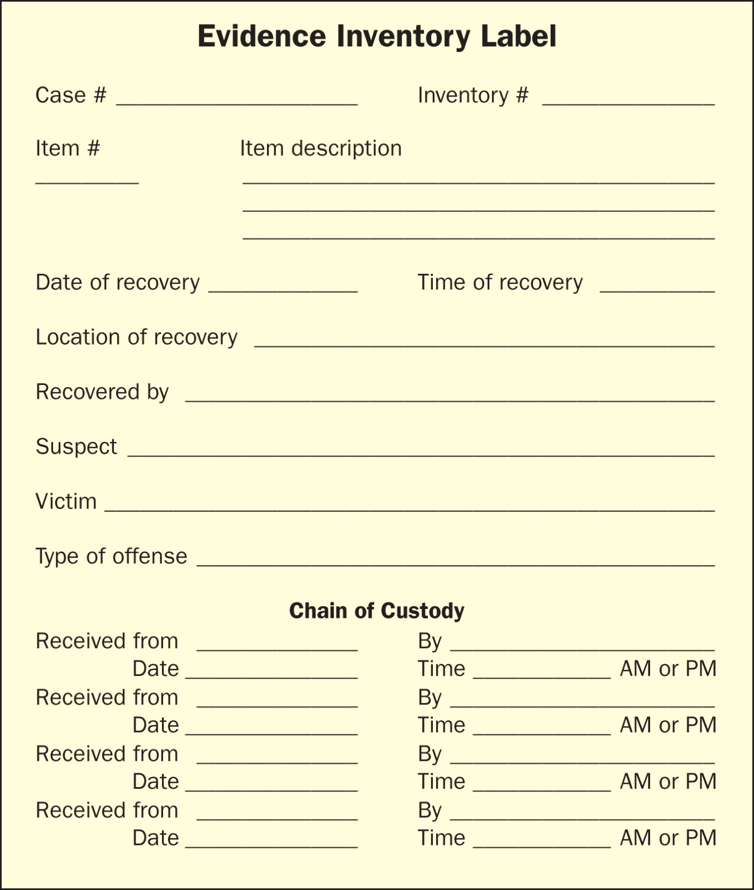

Secure the Scene
Explain why the first responder protects the area, limits access, and prevents evidence from being changed.
In this unit, you will learn how investigators secure a crime scene, document what they see, collect evidence carefully, and protect the chain of custody so evidence can still be trusted later.
By the end of this unit, you should be able to explain and apply the basic crime scene process.
Explain why the first responder protects the area, limits access, and prevents evidence from being changed.
Use notes, photos, and sketches to record the scene before evidence is collected.
Use labels, packaging, and chain of custody records so evidence can be traced from scene to courtroom.
Click through the tabs. These are the ideas you should understand well enough to explain in your own words.

Use labels like this to track what was collected, where it came from, and who handled it. The label is not busywork — it protects the credibility of the evidence.
Click each card to reveal the meaning.
Click to reveal.
Click to reveal.
Click to reveal.
Click to reveal.
Click to reveal.
Click to reveal.
Click to reveal.
Click to reveal.
Drag each item into the category where it fits best.
Use this when you need more information.
Use this when practicing with a mock scene.
Answer these in your notebook after an activity or mock scene.
Use these for extra reading, review, or research.
For class assignments, use approved sources and cite where your information came from. Do not submit AI-generated answers as your own work.